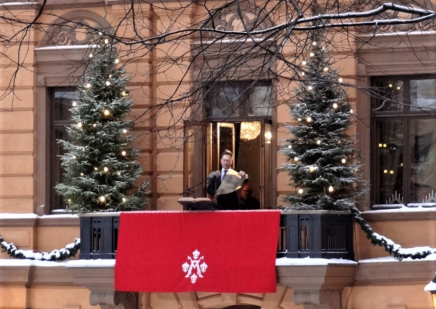

In Finland, families come together to celebrate Christmas, the most important holiday of the year. In the evening, around 5:00 p.m., families go to church for special services where candles are lit at the graves of their loved ones. Also on the eve at exactly 12 o'clock, from the balcony of the town hall, a representative of the city proclaims "Christmas peace". This means that from the time of the proclamation of peace until Epiphany, severe punishments are applied to those who disturb the peace. This custom has existed for almost 600 years and is valid for the entire country.
The children await the arrival of Santa Claus who always asks the same question: "Are there any good children here?". Santa has a bag full of gifts, and while his "servants" help him distribute them, he tells the children about his difficult journey from Lapland. Among the dishes served at Christmas are: ham or turkey, potatoes, carrot, liver pâté, rice containing a single almond. On December 25, a kind of fish is served that was originally prepared through a long process.